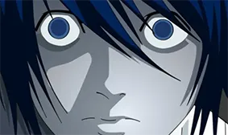
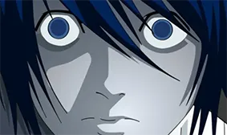
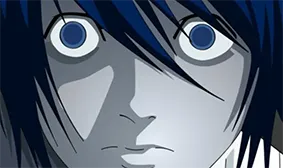

EL COLOR: más sobre el color
Acceso al documento original "aquí"

DEATH NOTE CAPITULO15 MINUTOS 8:22 Y 12:32
La serie Death Note, es un anime japonés, de género: misterio, sobrenatural y thriller. Debido a esto el estilo de la serie es sobrio y serio, la mayoría de los personajes y escenarios son de colores neutrales, de saturación baja o tonalidades oscuras, esto es debido a su ambiente laboral y social serio, la policía e investigadores.
El recurso de color que más me llamó la atención por su sutileza y forma directa es el uso de los dos colores complementarios (el azul y el rojo). En la serie el azul representa a “L” y su bando y el rojo representa a “Light” y sus allegados.
En varios capítulos se usa estos colores para representar y hacer entender al espectador quien está al mando de la situación, además de que en las varias peleas entre los dos personajes principales cada uno está coloreado en una gama monocromática de su color representativo.
Entre más avanza la historia los dos colores como ya he dicho antes representa quien está al mando de las diferente situaciones es decir, cuando los escenarios y los personajes se vuelven rojo, incluyendo “L”, es porque están bajo el mando de Light. Y por el contrario cuando todo incluyendo Light están en color azul es que están bajo el mando de “L”.
Las diamantes, villanas de la última temporada de la serie Steven Universe. Estos personajes son las líderes de una raza de conquistadores planetarios, En un principio hubo 4 diamantes en el poder, lideradas por Diamante Blanco, la mas poderosa entre ellas y la primera diamante nacida, las siguientes en la jerarquía son Diamante Amarillo, Diamante Azul y Diamante Rosa, respectivamente.
La creadora Rebecca Sugar, quiso representar a estos personajes de dos maneras distintas:la primera como villanas, en la última temporada, y como villanas reformadas, en la nueva serie Steven Universe Future.
Como villanas, cada personaje, su personalidad se basa en la simbología negativa de cada color:


Y como villanas reformadas sus personalidades cambian representante la simbología positiva de sus respectivos colores: